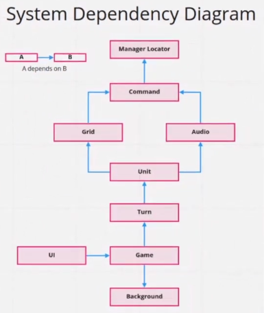
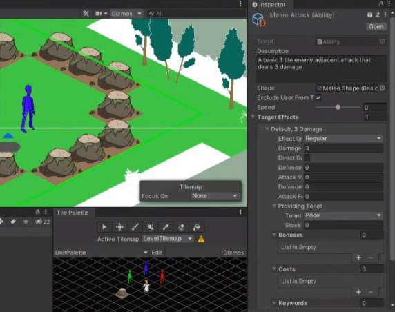
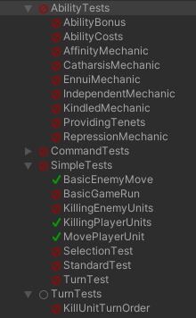
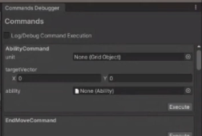

Soul Seacher is a turn-based action-puzzler, with roguelike progression system. You are presented a dream-like world where characters like Helena as they fight their way to conquer the sub-concious mind.
This is a tactics game where everything revolves around the concept of synergy, akin to the satisfaction of executing the perfect combo in card games. The player gets to control 3 characters each of which have abilities.
This project was part of the Playmakers Dev Team organised by the UTS Playmakers Society (A Game Development society in Univeristy of Technology Sydney). What made this project much more different and interesting from other projects that I have done is the scale of the project. The development team consisted of more than 20 members, all of which had to specialise in several different fields including programming, design, art, technical art, animation, sound, QA and project management. The project ran for a full year which at the time was my longest project yet.
The team structure is such that members could have core leads, co-leads and team member. The leads are in-charge of direction and decision-making of their field. For this project, I was the core lead of design and QA, as well as being the co-lead of programming.
The game design team is driven by two core leads. As the other half of game design team, we drive the decision-making process for what the game should be and thus other teams rely on us for what needs to be worked on for the game. A major reponsibility for the design team is to communicate to other teams and have them understand the game and the vision.
In retrospect, I learnt a lot of lessons from leading the game design from of all the things that we did wrong. More or less, most of the fault in our work here always comes back to miscommunication.
Firstly, I felt like we didn't give the rest of the teams a good understanding of the vision for the game, what makes it fun and such. As a result, everyone was developing a game without a clear direction and are able work as independent teams. This meant that they had misalignments with the design, which when combined with the rest of the game did not fit well. At the end of the day, this slowed down development. Even from the first weeks of development, different parts of the team were were on different pages which makes it even harder to discuss about design.
But one of the most fatal issues when it comes to the design was not having enough playtesting and not playtesting early enough. Although we did accomidate for some playtesting in the early phases of development, that kept getting pushed back as the game prototype was not ready. And even when the game prototype was ready, several important parts of the game were not yet implemented. This meant that the feedback from playtesting were not as useful as many features were not implemented yet.
As a co-lead of the programming team, I was responsible for helping the programming leads handle programming related matters. Most of that includes designing an effective game architecture that is both flexible and sturdy on the scale of some 8 or so programmers. I also designed and wrote a bunch interesting systems that I learnt a lot from.
The architecture reloves around two different concepts. The Service Locator pattern, which is adapted to game objects as a way to handle the concept of Unity Managers. Essentially, most core game system (e.g UI, turn system, ability system) usually has its own service which can be found by the service locator. And then, we have an event system that is based on the "Command" software design pattern. Each command has its own properties giving each event more context. Basing on the "Chain of Responsibility" software design pattern, we also chain different commands together as we get deeper into the codebase. The game loop itself is entirely event-driven, commands call other commands. Overall, this event system made it easier to organise code by creating a seperation of concerns. It makes it easier to debug by being able to identify and independently run commands (with an editor tool).
We also utilised assembly definitions for two major reasons. First, you automatically get slightly faster compile times on a large codebase. Second, it forces programmers to better organise their code. To oversimplify, this is happens because assembly definitions tells C# to compile a specific part of the codebase seperately. With the assembly definitions that we have defined, there is a seperation of concerns across differnt game systems. Each game system communicates in a top-down dependency tree and no circular dependencies are allows. At the end of the day, I think this method made the concept a lot easier to understand and makes it easier to locate specific parts of the code quickly all because the assembly definitions changed habits.
The image below shows what that ended up looking like.
The Ability system is definitely an interesting system. It is one that I got the chance to game design and code up. But it is because of being in-between programming and game design that I got to tailor the system exactly as is needed for the game design.
The system itself is very modular and flexible which I initially thought could use to save time. I did learn however that this level of tooling is only useful when we are sure that we are to produce multiple different variations of abilities. This phase did eventually happen though. Regardless, I find that even small levels of editor tooling can help a lot, even if you are still prototyping.
Creating a completely flexible ability system can be extremely complicated. However, I kept the system simple so that we can have a usable system ready in-time for the game build. In essence, each ability have different 3 major fields effects, costs and conditions. These are just simple data lists and values.
As I extended the system, I added the ability to have sub-abilities. Abilities can have sub-abilities in them. This simply makes it easier to reuse existing or common ability effects throughout the game. All the code does is recurssivly run abilities on-top of each other. This may seem like a small coding task, but it makes a whole lot of a difference when it comes to saving time in designing Abilities.
In retrospect, despite the incredible flexibility for the Ability system, there defintely some flaws. For instance, my co-designer had a lot of issues understanding how to use the Ability system to design the abilities that he wants. I think I defintely could have made improvements to make it slightly easier for a non-programmer to understand.
As a core member of Quality Assurance (QA). Initially we did standard QA procedures with QA template documents and a bug report system. Eventually, we explored further and delved into Automated Testing. To me, this was definetly an interesting and valuable learning experience.
There are several major outcomes that we want to achieve with the Automated Testing system.
As such, we developed several different kinds of tests as shown in the following image.
At the core of the Automated Testing system was the use of the Unity Test Framework. However for convinence, we used existing automated testing library called Minefield https://github.com/5argon/Minefield. This library helped made it easer to create tests that emulates player input. That is as if the player was actually clicking the screen and physically pressing the button. I tried to get something as close as possible to pressing a physical button so that we can test the game from top-down. We are performing something close to black-box testing in the case.
However, there are places whereby we take advantage of the command system to produce specific game states that we start testing from. At times, we also check on commands that went through to validate specific parts of code. Thus, we are still performing some white-box testing as well here.
Overall, I don't think we necessarily saved time with Automated Testing. Often, changes to the code impacted some of the tests that relied heavily on the game code. Other times, the gameplay would change which meant that we needed to update the tests. But I think I learnt a lot and realised that the topic of Automated Testing really could use more development. This eventually became a basis for my Honours thesis. Similar to what I explained in my thesis, it may even be useful to combine Automated Testing and Manual Testing to reap the benefits of each one. Despite this, I think there are specific scenarios where Automated Testing can be really useful. For example, testing features at a huge scale such that getting that many playtesting session can be expensive or discovering hard to find bugs such as those relating to Navigation.